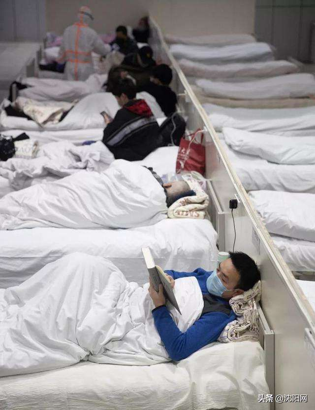

旅欧中国留学生的艰难回国路
原文链接 备份链接 疫情暴发之初，在欧洲的中国留学生普遍比较平静。随着疫情在欧洲迅速蔓延，留学生们就算“确有回国需求”，也很难立即回来，直航纷纷取消，转机充满变数，包机需要审批，既然暂时回不来，那就只能留下来继续抗疫 文 |《财经》记者 …

昨天想叫在东伦敦住的M和我视频连线、一起在线工作，结果她说，“同学，你得找个不被老板催到吐血的”，然后甩过来一个手机截屏，上面是从早六点到晚九点的四个闹钟。M是市场分析师，全球股市正一起流血狂跌，她的在家工作变成了在家全天候工作，加班加到要给自己的午饭、晚饭设个闹钟。
“你怎么样啊？”我打了个电话过去。
“我已经快加班加死了” （然后给我解释了她上班的时候是四台屏幕，现在家里只有两台不够用）
“你们从什么时候开始work from home的？”
“上周三。”
“那你们还算早的了！”
“我直接跟老板硬说的，他一开始还不答应，我当时就哭了，他才说好好好你回去吧。结果上午回去，下午我同事就爆出有疑似的。当时跟我老板说的时候我就想，要是他再不答应我就直接take holiday，到时候你就连我这个人都找不到。”
“你说外国人为什么这么不怕死？是因为意大利和中国的新闻没有翻译成英语吗？”
“我跟你说，就是傲慢和无知。”
疫情在中国刚爆发的时候，海外的中国人（和华人）大多如惊弓之鸟，我也是。我还记得1月20号那一周，我和一位英国策展人带研究生在伦敦城里各处看公共艺术项目，因为要去地铁里看Art On the Underground，我害怕密闭空间里的密集人流，出门就戴上了刚买的口罩，也在包里放了一沓给全班。到了地铁站闸口，看见我的英国老师笑了，“you are too anxious”，然后说，“I don’t think it will spread here”。等到开始上课，我默默把口罩收起来，因为真的没人戴着。当然仍然担心中招，但是那种环绕在身边的“无忧无虑”会让人有压力再去展露自己的担忧，或者说，我暂时说服了自己：他们并不担心也有他们的理由，他们应该比我更理解此时此刻我在的英国。
中国的疫情日渐严重，海外也渐渐开始有确诊病例时，谈论起新冠病毒，总有身边的朋友、或者偶尔聊起的陌生人说，“别担心，这只是流感”（don’t worry, it’s just a flu），或者“这病对年轻人没什么威胁，老年人需要注意”（it doesn’t hurt much to young people）。这时候我开始怀疑，他们是真的这么想吗？还是其实知道它的重症率高于10%，知道它让武汉和湖北整个城市瘫痪了，知道它让中国十几亿人都闭门不出，但是为了不增加对话中彼此的恐慌，才如此措辞？
我现在发现，有时候我们把人想得太好了。M说，她这次最失望的，就是发现她的英国老板和白人男同事们（她是组里唯一的女生，这是另外一个故事），是真得从未平等地、以人及己地看过中国的新闻——这些分析员是追着中国的新闻看的，他们从封城开始就关注疫情的进展，因为这事关全球的金融市场，但他们仍并不觉得这和自己的生活有关；等到再近一点，意大利也陷入困境，但办公室里仍然在以“流感”谈论着新冠——为什么呢？明明看到那里有多惨烈了呀？轻松地用“流感”来称呼它，仿佛自己一定会从这场危机中全身而退，不觉得是对中国和意大利的侮辱吗，是什么让他们觉得自己会是最幸运的那个人呢？
因为仍然觉得那里是中国、是意大利吧；因为这里是英国，一直都体体面面的英国。这里的人们在心里的仍有不愿承认的或者不自觉的傲慢：中国和意大利的灾情严重应该是因为那里的管理混乱，因为医疗能力不够，因为中国是个体制不同的国家——如果疫情真的暴露出什么全球化的问题，那就是即便交通和通讯技术让人们连在一起，但在英国社会里，理念上中国仍然是一个他者，并不在自身经验之中。M说，“他们都相信英国是民主国家，不会有事”，诸如此类的，还可以加上“文明”和“现代”——这种根深蒂固的信念，加上即时传递的信息，其实让人们对自己和他人都变得更加盲目：“人们以为自己知道，不知道自己其实根本就不知道”。这样的无知并不在知识的层面，而是心态。
不要说什么“群体免疫”（herd immunity）了，我们应该先来谈谈“群体心态”（herd mentality），这才是最致命的，而且很难改变。英国人当然可以发挥镇定的传统，了解全局、面对现实、调整策略之后的“keep calm and carry on”，在恐慌到来的时候，中国人也该如此。这两个月里，我镇定下来了，会每天看新闻，也会每天钻进研究里忘掉现实一会儿，但我能一直镇定是因为我可以几乎全然独处。但M不得不去上班，而她的办公环境是，周围同事们直到被要求隔离之前，仍然相信的是“it’s a flu”。
而这其实不仅仅有关知识分子和艺术家们一直在反思的“西方中心”或者殖民心态，疫情对人的要求比选择一个正确的立场要大的多，它要求人们对现实中发生的变化，保持谦卑、十足敬畏，准备好为它做出改变。两周前在伦敦疫情即将爆发的时刻，RCA老师罢工，我感到尴尬的是，之前在中国爆发疫情时来安慰我、认为不该歧视亚裔的左派同学们，此时正要出发到罢工前线声援，那自然是人群密集的地方。我提醒他们注意防护，保持和其他人的距离，没有口罩的话，可以用魔术头巾，但我的朋友们说，“谢谢，但应该还好，我就去一个小时”，“我不会太担心的”，只有一个美国同学说，“放心，我会站在人群外面”。
我一直在想，当时是不是应该再更激烈地说服他们？甚至我也犹豫，是不是我也应该去罢工现场支援老师呢？但当时我没有再说服他们不去，也没有去罢工的前线。我困惑——对病毒，是否仍然是自己担忧太多，是否事情仍在掌控之中，是否是我太胆小、而他们更有舍命参政的勇气？我也困惑——对于罢工，如果教育的产业政策没有改变，被学生揪出来的校长有能力去降低学费吗？如果社会描绘出一幅自由流动、选择多元的幻象作为诱人前景，教师们此时反对自己的临时合同，是否也有悖论？
那个时刻，我的确失语了。对我的左派同学们来说，政治行动的紧迫性远远大于了他们对病毒的担心，而正是这种立场在两个月前让他们并不畏惧病毒而安慰我。然而，就像前天的讨论会上，我发现欧洲和美国的艺术家们并没有听说过李文亮和艾芬一样，人们其实大多数时候并没有普遍地关心世界，而是沿着自我的惯性、沿着相信的立场，生活和选择着。
瘟疫之所以为瘟疫，是因为它普遍地瓦解我们，就像各式各样的“民主”（或它的对立面）在疫情中不再是政治概念而都化为不同国家的“紧急状态”，罢工在今天学校都关闭的情况下也失去了效力一样，病毒迫着我们去重看现实，重构脑中的观念，我们不得不改变自己，去想象一种新的政治。

One Three Ears
长按二维码向我转账
受苹果公司新规定影响，微信 iOS 版的赞赏功能被关闭，可通过二维码转账支持公众号。
文章已于修改
原文链接 备份链接 疫情暴发之初，在欧洲的中国留学生普遍比较平静。随着疫情在欧洲迅速蔓延，留学生们就算“确有回国需求”，也很难立即回来，直航纷纷取消，转机充满变数，包机需要审批，既然暂时回不来，那就只能留下来继续抗疫 文 |《财经》记者 …
原文链接 备份链接 昨日，米兰有小区突然宣布封闭，我住的城市都灵离米兰大概30多分钟车程，电视里轰天轰地的全是冠状病毒的消息，把人一下就弄晕了，我和家人一个多月前计划的那不勒斯旅游正好是今天开始，我们讨论了一下，决定还是出发，毕竟觉得有疫 …
原文链接 备份链接 英国准备了更多举措，但这些措施在什么时候实施才能达到最大效果，是英国政府的重要考量，尽管这导致了英国的对策看起来暂时让外人难以理解 本文 6854字，阅读全文约10分钟 文 |《财经》记者 江玮 发自伦敦 编辑 | 郝 …
原文链接 备份链接 作为一个科学大国，英国是如何应对新冠疫情的？他们是否能走出一条和中国不同、社会成本更低而行之有效的防疫之路？为此我们采访了流行病学专家、牛津大学终身教授陈铮鸣。 英国于 1 月底确诊第一位来自中国的输入性新冠患者。截 …
原文链接 备份链接 意大利确诊数破千时，大部分英国人还在隔岸观火，有人甚至拿新冠病毒开玩笑。如今英国人聚集的社交网络上多的是祈祷上帝保佑的推文。有人调侃说，老外都跟在华人后面逛超市，华人买什么他们就买什么 文 |《财经》驻英国特约作者 文 …